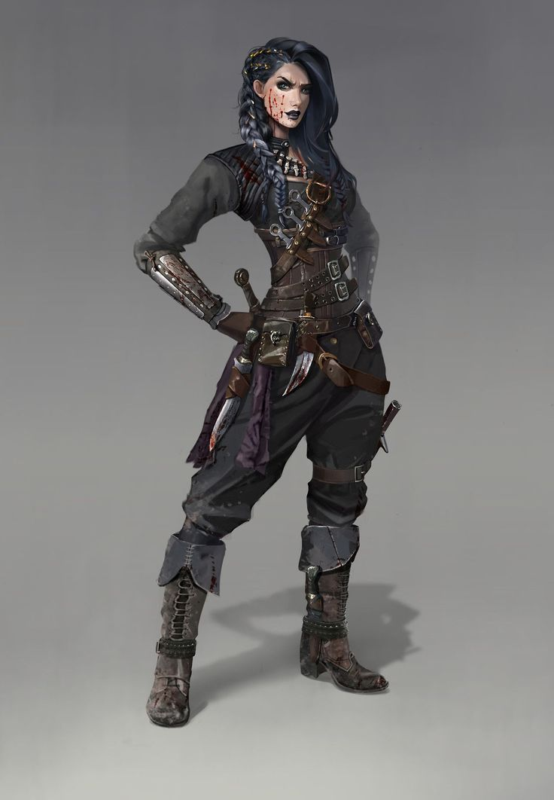

Для некоторых жизнь - это постоянное приключение. Играя с судьбой, плуты делают ставку на хитрость, талант и шарм, всегда надеясь выйти сухими из воды. Плуты никогда не знают заранее, чего ожидать, и оттого готовы ко всему: они осваивают множество навыков, становясь умелыми манипуляторами, ловкими акробатами, мастерами маскировки и специалистами самого широкого профиля. Воры и игроки, болтуны и дипломаты, бандиты и охотники за наградами, исследователи и следователи - все они, как и представители многих иных профессий, требующих сообразительности, ушлости или удачи, могут считаться плутами. Хотя многие плуты предпочитают города и богатые возможности цивилизации, некоторые выбирают кочевую жизнь - дальние путешествия, встречи с необычными людьми и фантастические опасности на пути к не менее фантастическим сокровищам. В конечном счете плутом можно назвать любого, кто предпочитает играть по своим правилам.
Плуты прекрасно умеют передвигаться незаметно и застигать противника врасплох, однако прямых боевых столкновений они обычно избегают. Разнообразные навыки и способности позволяют им быть весьма гибкими, и каждый плут специализируется в чем-то своем. Однако почти все они искусны в преодолении препятствий, будь то запертые двери, обычные и магические ловушки или глупые, легко поддающиеся обману враги.
Мировоззрение: Любое.
КЗ:d8.
Стартовое богатство: 4d6 x 10 зм (140 зм в среднем).
Акробатика (Лвк), Блеф (Хар), Внимание (Мдр), Дипломатия (Хар), Запугивание (Хар), Знание (краеведение) (Инт), Знание (подземелья) (Инт), Изворотливость (Лвк), Исполнение (Хар), Использование магических устройств (Хар), Лазание (Сил), Ловкость рук (Лвк), Маскировка (Хар), Механика (Лвк), Оценка (Инт), Плавание (Сил), Проницательность (Мдр), Профессия (Мдр), Ремесло (Инт), Скрытность (Лвк), Языкознание (Инт)
Пункты навыков за уровень: 8 + модификатор Интеллекта.
| Ур | БМА | Стойкость | Реакция | Воля | Прочее |
|---|---|---|---|---|---|
| 1 | +0 | +0 | +2 | +0 | Атака исподтишка +1d6, поиск ловушек |
| 2 | +1 | +0 | +3 | +0 | Уклонение, воровской прием |
| 3 | +2 | +1 | +3 | +1 | Атака исподтишка +2d6, чутье на ловушки +1 |
| 4 | +3 | +1 | +4 | +1 | Воровской прием, невероятное уклонение |
| 5 | +3 | +1 | +4 | +1 | Атака исподтишка +3d6 |
| 6 | +4 | +2 | +5 | +2 | Воровской прием, чутье на ловушки +2 |
| 7 | +5 | +2 | +5 | +2 | Атака исподтишка +4d6 |
| 8 | +6/+1 | +2 | +6 | +2 | Невероятное уклонение+, воровской прием |
| 9 | +6/+1 | +3 | +6 | +3 | Атака исподтишка +5d6, чутье на ловушки +3 |
| 10 | +7/+2 | +3 | +7 | +3 | Продвинутые приемы, воровской прием |
| 11 | +8/+3 | +3 | +7 | +3 | Атака исподтишка +6d6 |
| 12 | +9/4 | +4 | +8 | +4 | Воровской прием, чутье на ловушки +4 |
| 13 | +9/+4 | +4 | +8 | +4 | Атака исподтишка +7d6 |
| 14 | +10/+5 | +4 | +9 | +4 | Воровской прием |
| 15 | +11/+6/+1 | +5 | +9 | +5 | Атака исподтишка +8d6, чутье на ловушки +5 |
| 16 | +12/+7/+2 | +5 | +10 | +5 | Воровской прием |
| 17 | +12/+7/+2 | +5 | +10 | +5 | Атака исподтишка +9d6 |
| 18 | +13/+8/+3 | +6 | +11 | +6 | Воровской прием, чутье на ловушки +6 |
| 19 | +14/+9/+4 | +6 | +11 | +6 | Атака исподтишка +10d6 |
| 20 | +15/+10/+5 | +6 | +12 | +6 | Мастерский удар, воровской прием |
Ношение брони и обращение с оружием:Плут умеет обращаться со всем простым оружием, а также с мягкой дубинкой, коротким луком, коротким мечом, рапирой и ручным арбалетом. Он умеет использовать легкие доспехи, но не щиты.
Атака исподтишка:Если плут застигает противника в момент, когда тот по любым причинам неспособен эффективно себя защищать, он может ударить в уязвимое место, нанеся дополнительный урон. Это происходит, когда противник плута временно теряет положительный модификатор Ловкости к КБ (неважно, есть у него таковой или нет) или когда плут берет противника в тиски. Этот дополнительный урон равен 1d6 на 1 уровне и увеличивается на 1d6 за каждые следующие два уровня плута. Если плут наносит атакой исподтишка критический удар, этот дополнительный урон не умножается. Дистанционные атаки могут быть атаками исподтишка, только если цель находится не дальше чем в 30 футах от плута.
Пользуясь оружием, наносящим несмертельный урон (например, безоружным ударом, кнутом или мягкой дубинкой), плут может предпринять атаку исподтишка, наносящую несмертельный урон вместо смертельного. Оружие, наносящее смертельный урон, для этой цели не годится, даже если атаковать с положенным штрафом -4.
Чтобы совершить атаку исподтишка, плут должен видеть цель достаточно хорошо, чтобы найти ее уязвимое место, а также иметь возможность добраться до этого места. Существ, которых плохо видно, нельзя атаковать исподтишка.
Поиск ловушек:Плут добавляет 1/2 своего уровня (минимум +1) к проверкам Внимания для обнаружения ловушек, а также к проверкам Механики. Он может применять Механику для обезвреживания магических ловушек.
Уклонение (Экс):Начиная со 2 уровня плут имеет возможность увернуться даже от необычных и магических воздействий. Если плут подвергается воздействию, позволяющему пройти испытание Реакции для уменьшения урона вдвое, то в случае успеха он не получает урона совсем. Если плут беспомощен, уклонение не работает. Плут может применять уклонение, только если он без доспехов или в легких доспехах.
Воровские приемы:По мере набора опыта плут осваивает разные хитрые приемы - в помощь себе, на горе недругам. На 2 уровне он осваивает один воровской прием. Каждые два уровня после этого он осваивает еще по одному. Любой прием можно выбрать только один раз.
Помеченные звездочкой приемы усиливают плутовские атаки исподтишка. Только один из них может применяться к любой конкретной атаке, и выбор надо делать до ее совершения.
Бесшумные шаги (Экс): Этот прием позволяет плуту без штрафов двигаться скрытно с полной скоростью.
Боевой прием: Плут, выбравший этот прием, получает дополнительную боевую черту.
Быстрое обезвреживание (Экс): Плут, владеющий этим приемом, обезвреживает ловушки при помощи навыка Механики вдвое быстрее обычного (минимум 1 раунд).
Внезапная атака (Экс): Для плута, владеющего этим приемом, в предбоевом раунде все противники считаются застигнутыми врасплох, даже если они совершили свой ход.
Живучий плут (Экс): Плут, владеющий этим приемом, может один раз в день получить временные ПЗ в количестве, равном его уровню. Эту способность он применяет в качестве прерывающего действия, которое можно произвести только в тот момент, когда ПЗ плута падают ниже 0. Таким образом он способен избежать смерти. Временные ПЗ сохраняются в течение 1 минуты. Если П3 плута упадут ниже 0 в результате потери этих временных ПЗ, он оказывается без сознания и при смерти по обычным правилам.
Замедленная реакция* (Экс): Противники, раненные атакой плута исподтишка, на 1 раунд теряют способность предпринимать внеочередные атаки.
Кровоточащая рана* (Экс): Атака исподтишка, проведенная плутом с этой способностью по живому существу, вызывает кровотечение. Противник с таким ранением каждый раунд получает еще по 1 пункту урона за каждую кость дополнительного урона от атаки исподтишка (например, атака исподтишка, наносящая 4d6 урона, вызывает кровотечение на 4 дополнительных пункта урона в раунд). Существа с кровотечением получают урон каждый раунд в начале своего хода. Кровотечение можно остановить, пройдя проверку Лечения со СЛ 15 или применив любой эффект, восстанавливающий ПЗ. Эффекты кровотечения от этого приема не складываются. Урон от кровотечения преодолевает любое СУ существа.
Наметанный глаз (Экс): Когда владеющий этим приемом плут оказывается в 10 футах от ловушки, он тут же получает возможность заметить ее, пройдя проверку Внимания. Эту проверку совершает ведущий втайне от игрока.
Плут-фехтовальщик: Этот прием позволяет плуту взять Фехтование в качестве дополнительной черты.
Подскок (Экс): Этот прием позволяет распластанному плуту вскочить, совершив свободное действие. При этом плут провоцирует внеочередную атаку, если находится на контролируемой противником клетке.
Ползучий плут (Экс): Владеющий этим приемом плут способен, распластавшись, двигаться ползком с половиной скорости. Он также может не вставая делать широкий шаг. Перемещение ползком провоцирует внеочередные атаки по обычным правилам.
Серьезная магия (Пс): Плут, владеющий этим приемом, может два раза в день применять одно заклинание 1 круга из списка чародея/волшебника, которое при этом считается псевдозаклинанием. УЗ этой способности равен уровню плута. СЛ испытаний против этого заклинания равна 11 + модификатор Интеллекта плута. Чтобы выбрать этот прием, плут должен иметь Интеллект не менее 11 и владеть приемом фокус-покус.
Уверенное владение оружием: Владеющий этим приемом плут получает Уверенное владение оружием в качестве дополнительной черты.
Фокус-покус (Пс): Плут, владеющий эти приемом, может три раза в день применять одно заклинание 0 круга из списка чародея/волшебника, которое при этом считается псевдозаклинанием. УЗ этой способности равен уровню плута. СЛ испытаний против этого заклинания равна 10 + модификатор Интеллекта плута. Чтобы выбрать этот прием, плут должен иметь Интеллект не менее 10.
Эквилибрист (Экс): Этот прием позволяет плуту перемещаться по узким поверхностям с полной скоростью, совершая проверки Акробатики без штрафов. Кроме того, владеющий этим приемом плут не считается застигнутым врасплох, когда он применяет Акробатику, двигаясь по узким поверхностям.
Чутье на ловушки (Экс):На 3 уровне плут обретает чутье, позволяющее ему вовремя реагировать на срабатывающие ловушки и дающее +1 к испытаниям Реакции против ловушек, а также бонус +1 (уклонение) к КБ от атак ловушек.
Эти модификаторы возрастают до +2 на 6 уровне, +3 на 9 уровне, +4 на 12 уровне, +5 на 15 уровне и +6 на 18 уровне. Модификаторы чутья на ловушки, полученные от разных классов, складываются.
Невероятное уклонение (Экс):На 4 уровне плут обретает способность реагировать на опасность быстрее мысли. Его нельзя застать врасплох и он не теряет положительный модификатор Ловкости к КБ, если его противник невидим.
Плут все же теряет модификатор, если не может двигаться, а также если противник успешно применит против него финт. Если у плута уже есть особенность невероятное уклонение, полученная от другого класса, он автоматически получает невероятное уклонение+ (см. ниже).
Невероятное уклонение+ (Экс):Начиная с 8 уровня плута больше нельзя взять в тиски. Другой плут при этом не может предпринять против него атаку исподтишка, взяв в его тиски, если только его уровень плута не превышает уровень плута жертвы на 4.
Если у персонажа уже есть полученная от другого класса особенность невероятное уклонение (см. выше), уровни в этих классах складываются для определения того, какой минимальный уровень плута нужен для взятия персонажа в тиски.
Продвинутые приемы:На 10 уровне и каждые два уровня после этого плут получает право выбрать вместо обычного воровского приема продвинутый прием из следующего списка.
Виртуоз: Плут настолько поднаторел в определенных навыках, что может уверенно пользоваться ими даже в тяжелых условиях. Осваивая этот прием, плут выбирает 3 + модификатор его Интеллекта навыков. Совершая проверку такого навыка, он может без броска кости взять результат 10 даже в тех ситуациях, когда стресс и помехи обычно не позволяют этого сделать. Плут может брать этот прием несколько раз, каждый раз применяя его к новому набору навыков.
Калечащий удар* (Экс): Владеющий этим приемом плут может точными ударами ослаблять противников. Любой, получивший урон от его атаки исподтишка, получает также 2 пункта урона Силе.
Рассеивающая атака* (Св): Если плут с этой способностью наносит врагу урон атакой исподтишка, враг также подвергается действию рассеивания магии. При этом из всех наложенных на цель эффектов заклинаний в первую очередь рассеивается тот, чей круг самый низкий. УЗ для рассеивания равен уровню плута. Чтобы выбрать этот прием, плут должен владеть приемом серьезная магия.
Скользкий разум (Экс): Этот прием позволяет освобождаться от магических эффектов, которые призваны контролировать или принуждать. Если плут, владеющий этим приемом, проваливает испытание против заклинания или иного эффекта очарования, он может попытаться пройти его 1 раунд спустя с той же СЛ. У него есть только одна дополнительная попытка.
Смягчение удара (Экс): Плут с этим продвинутым приемом может, извернувшись, смягчить потенциально смертельный удар, получив меньше урона. Один раз в день, когда урон от удара в бою (но не от заклинания или особой способности) может уменьшить количество его ПЗ до 0 или ниже, плут имеет право попытаться пройти испытание Реакции (СЛ которого равна нанесенному урону), чтобы смягчить удар. В случае успеха он получает только половину урона, в случае провала - полный урон. Плут должен знать об атаке и иметь возможность на нее среагировать: если он лишен в этой ситуации модификатора Ловкости к КБ, то не может смягчить удар. Плутовская способность уклонение не применяется при смягчении удара.
Счастливый шанс (Экс): Плут, владеющий этим приемом, может раз в раунд провести внеочередную атаку по противнику, которого только что ранил в ближнем бою другой персонаж. Эта атака входит в лимит доступных плуту внеочередных атак в раунд. Даже плут с чертой Боевые рефлексы не может применять эту способность чаще одного раза в раунд.
Уклонение+ (Экс): Улучшение способности уклонение. Плут по-прежнему не получает урона в случае успешного прохождения испытания Реакции, а в случае провала получает только половину урона. Если плут беспомощен, уклонение+ не работает.
Черта: Плут может выбрать вместо воровского приема любую черту, требованиям которой отвечает.
Мастерский удар (Экс):На 20 уровне результаты атаки исподтишка становятся просто убийственными. Каждый раз, когда плут наносит урон атакой исподтишка, он выбирает один из трех эффектов, который подействует на жертву: усыпление на 1d4 часа, парализация на 2d6 раундов, смерть.
Любой из трех эффектов позволяет жертве пройти испытание Стойкости, отменяющее его при успехе. СЛ испытания равна 10 + 1/2 уровня плута + модификатор Интеллекта плута.
Существо, получившее мастерский удар, становится невосприимчивым к таким ударам того же плута на 24 часа независимо от успешности испытания.
Существа, невосприимчивые к урону от атак исподтишка, невосприимчивы и к этой способности.
Назад к списку классов